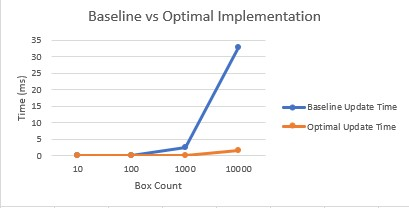

About me
Hi there, I am Declan, a final year Games Programming student at Staffordshire University. As a hobbyist drummer and guitarist, I love music, and as such, I have completed my dissertation on recreating the Buchla Low Pass Gate.
During my time at Staffordshire University, I have studied Audio Programming, Cross Platform Engine Developement, Low Level Optimisation, Graphics Programming, and AI Programming.
As part of the Audio Programming module, I designed and implemented an audio system that fades between selected tracks when the player moves between trigger areas.
As part of the Cross Platform Engine Development, I primarily worked on the Physics Engine, implementing force based movement, and Separating Axis Theorem to detect collision.
During my placement year, I worked for d3t as a Programming Intern. During the beginning of this role, I worked alongside a fairly large team on Vampire: The Masquerade - Bloodhunt, on which I am credited. My job was to learn the code base of the project, and to help out with bug fixing. Towards the end of this project
I worked with a smaller team to implement a new feature to enhance the user experience, and on tweaking an existing feature to get it up to the client's standards.
Throughout the rest of the placement, I worked alongside some great people on a number of different projects, ranging from helping out on an internal project by developing a tool, to spending some time creating a prototype for a client, which allowed me to witness and understand the planning and implementation of a game, and get a feel for the start to end development cycle.
I learned plenty of things during my placement, and vastly improved my ability to work as part of a team, and be able to adapt to whichever project I was put on.
University Projects
Below are some of the projects I have completed or are currently in progress during my time at University:
Click the titles to be taken to the repo for the projects.
The purpose of this project was to create an audio tool or system for the Audio Programming Module. I took inspiration from Final Fantasy XIV and designed a system that fades between tracks
when the player moves between trigger boxes. This functionality was implemented using Unreal Engine 5 blueprint nodes, which were places within a Blueprint Function Library.
This was done so that the system could be as drag and drop as possible, allowing the developer to drag in the correct functions for when the user overlaps with the trigger to switch tracks.
Cross Platform Engine Development
This project is a currently ongoing group project in which we are tasked with creating a framework from scratch that can compile to multiple platforms, and to create a tech demo with this framework.
My task on this project is to design and plan the physics. So far I have created a RigidBody class that handles the 2D movement and collision of polygons by using the Separating Axis Theorem which
is where if an axis can be found between the two polygons, then they are not colliding. This method was chosen to limit the amount of individual checks needed between every shape of object allowed.
On top of this, I have implemented Ray Casting by subdividing a vector and checking if objects are within that subdivision. I have also worked with the others to support custom collision shapes by reading in custom vertices.
The purpose of this project was to work as a team to create a game. We chose to use Unity for this project since it is the engine that the most of us had experience with.
As part of this project, I was responsible for implementing the placing and throwing of the bombs, as well as the collectable and ammunition systems. On top of this, I also did a little bit of level design and created the second and third levels.
Finally, I created a singleton audio manager that was responsible for playing new background music tracks when the player loaded into a new level.

The purpose of this project was to optimise a program that we had been given. I did this by implementing multithreading and quadtrees. Thanks to my optimistations,
I managed to improve the speed of the program update loop by 23x from 32.62ms to 1.38ms by using a quadtree of depth 3 (or 32 even quadrants) and 16 threads.
All of the optimistation data can be found in spreadsheets in the GitHub repo.
The purpose of this module was to learn A star pathfinding. To do this, we were given a DirectX framework to work within. We were then given tasks to learn how A star works and how to create a state machine.
Through completing this module, I ended up with a final product where to AI work independently and can have different states, such as seek and wander. They can also use A star pathfinding to create a path to one of two collectables,
prioritising whichever is closer.
Personal Projects
Below are some of the projects that I have worked on in my free time:
Contact
To contact me, please message me on either Twitter (X) or LinkedIn using the links below.
Also, check out my Github account also linked below.